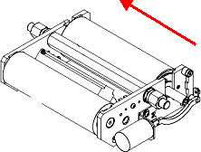
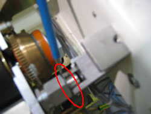
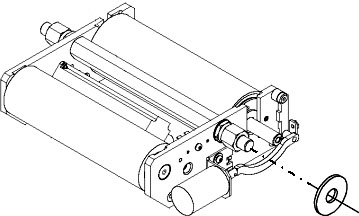

Operating Documentation
Direction 5193891-800, Rev# 5
LightSpeed 5.X Pro16 Limited Access Service Information (Adv)
Operating Documentation |
| Required Persons | Preliminary Reqs | Procedure | Finalization |
|---|---|---|---|
| 1 | Timing Not Applicable | 25 mins | 30 mins |
This procedure is used to reduce lateral (left-right) table movement when the Cradle is being driven.
| Last Revised on: | January 25, 2006 |
| Item | Qty | Effectivity | Part# | Manufacturer | |
|---|---|---|---|---|---|
| Standard FE Tool Kit | 1 | - | - | ||
| Shim Kit | 1 | - | 51040615 | - | |
| Composed of: | |||||
| 0.5mm stainless steel shim | 6 | - | 5139250 | - | |
| 0.2mm blue-tempered steel shim | 3 | - | 5139250-2 | - | |
| Item | Qty | Effectivity | Part# | Manufacturer |
|---|---|---|---|---|
| Tie-Wraps | - | - | - |
Raise the Table to maximum height.
Remove right Gantry Side Cover.
| POTENTIAL FOR SHOCK. | |
| VOLTAGE MAY BE PRESENT. | |
| USE PROPER LOCKOUT/TAGOUT PROCEDURES BEFORE REPLACING COMPONENTS. |
| Always turn OFF the HVDC before the 120 VAC. Turning OFF 120 VAC power before HVDC power can result in equipment damage. | |
Remove power from table by turning off 120VAC, Axial Drive, and HVDC switches on Service Switch Panel.
Remove the right Table Side Rail Cover and the Cradle Drive Cover (under drive).
| An unlatched Cradle/Carriage Assembly could quickly move toward the Gantry and damage the Longitudinal Encoder Assembly. | |
Latch the Carriage and remove the Cradle Assembly using a 3/16” hex key.
Remove the two screws from the Cradle Encoder Cover using a 1/8 inch hex key.
Remove the Ground Screw in the Grounding Cable from the Table chassis using a 1/8 inch hex key.
Remove the 9-pin connector (only 2 wires in it) from the right side of the Assembly.
Disconnect the two cables running from the motor, on the right outside part of the Table.
Remove any tie-wraps that may still be binding the Cradle Drive Assembly to the Table.
Push the Cradle Drive in the direction of the arrow shown in Illustration 1, such that the gap is all on one side of the Cradle Drive.
Illustration 1: Push Cradle Drive in Direction of Arrow

Determine the number of 0.5mm and 0.2mm shims required so the gap is less than 0.2mm (Use as many 0.5 shims as will fit, then add as many 0.2mm shims as will fit). See Illustration 2.
| NOTE: | The blue pencil points to the gap between the drive pivot pin and the bracket (the guide roller has been removed for clarity). |
Illustration 2: Drive Pivot Pin and Bracket Gap

Remove the Cradle Drive Assembly from the Table.
Tilt the front roller of the Cradle Drive downward.
Lift the entire assembly up, then backward, and then down.
Gently remove the assembly from the bottom of the table.
| NOTE: | Take care not to disturb the Longitudinal Encoder cable. |
Slide ALL the needed shims (as determined in Step 12) onto the side shown in Illustration 3.
| NOTE: | Installing the shims on both sides will make assembly difficult since they will fall off as the drive is put back into position. |
Illustration 3: Install Shims on Side of Drive Shown

Reinstall the drive. Place the pin without shims into the bracket first, then set the pin with the shims into place. Verify that the drive pins are fully seated and not hung up on the shims.
Reconnect the two cables from the motor, the grounding cable to the Table Chassis and the 9-pin connector.
Secure any loose cables with tie-wraps.
Reinstall the Encoder Cable Shield, the Cradle Assembly, and the Table Side Rail Covers/Drive cover.
| NOTE: | Install the 6 cradle bolts, but do not tighten. Center the Cradle between the guide rollers. Torque the six screws to 13 ft-lbs. |
Power up the Table from the Service Switch Panel. (You may need to press the Reset button on the gantry keypad to turn the table back on.)
Use the gantry control keys to move the Table up and down, and the Cradle in and out.
When the Table functions properly, reinstall the Gantry Side Cover.